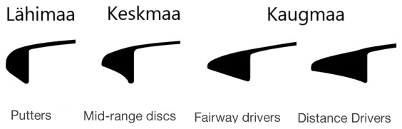
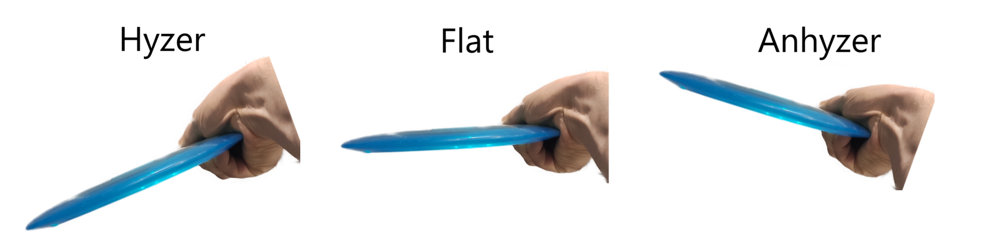

Kaugmaakettad ehk driverid jagatakse veel omakorda kaheks:
Distance driver
Fairway driver
Ketta läbilõigete erinevused:

Numbrite tähendused
Omadus (numbrikoht)
Selgitus
Kiirus (1.)
Kiirus on ketta võimekus “lõigata läbi õhu”. Kiirus on vahemikus 1 kuni 14.
Hõljumine (2.)
Hõljumine on ketta võimekus lennu vältel õhus püsida. Hõljumine on vahemikus 1 kuni 6.
Pööramine (3.)
Pööramine määrab, kas ketas kaldub paremale või vasakule viske ajal. Pööramine vahemikus -5 kuni 1.
Hajumine (4.)
Hajumine näitab, kuidas ketas maandumise lõpus liigub vasakule. Hajumine vahemikus 0 kuni 5.
Alustav mängija võiks oma oma esimese ketta valikul lähtuda numbritest 7 / 5 / -2 / 1 või +/- 1 iga eelnevalt väljapakutud numbri kohta.
Ketta stabiilsus
Stabiilsus tüüp
Selgitus
Alastabiilne
Pöörab lennu algfaasis paremakäelise tagakäe viske puhul rohkem paremale ja hajub vähem vasakule, vasakukäelistel vastupidi.
Stabiilne
Lendab üldjuhul otse ja hajub lennu lõpus vähe.
Ülestabiilne
Omab suurt lõpu hajumist ning võib juba lennu keskfaasis nõrgema viske puhul hajuma hakata.
Üldjuhul on soovitatud alustaval mängijal valida pigem alastabiilsed kettad, et saavutada maksimaalne distants ning täpsus. Ülestabiilsed kettad on pigem sobilikud edasijõudnud mängijatele.
Viskenurgad

Viske tüüp
Selgitus
Hyzer ehk ketta välisserv käest allpool
Muudab ketta veel stabiilsemaks ning see hajub kiiremini vasakule kui maapinnaga paralleelselt visates.
Flat ehk ketta välisserv käega paralleelselt
Ketas lendab oma kõige loomulikumat trajektori lähtudes viskaja tehnikast ning viske tugevusest.
Anhyzer ehk ketta välisserv käest kõrgemal
Suunab alastabiilse ketta rollerisse, stabiilne ja ülestabiilne ketas teevad S-kurvi kus stabiilne ketas lõpetab üldjuhul sirgelt ning ülestabiilne ketas trajektoorist vasakul.